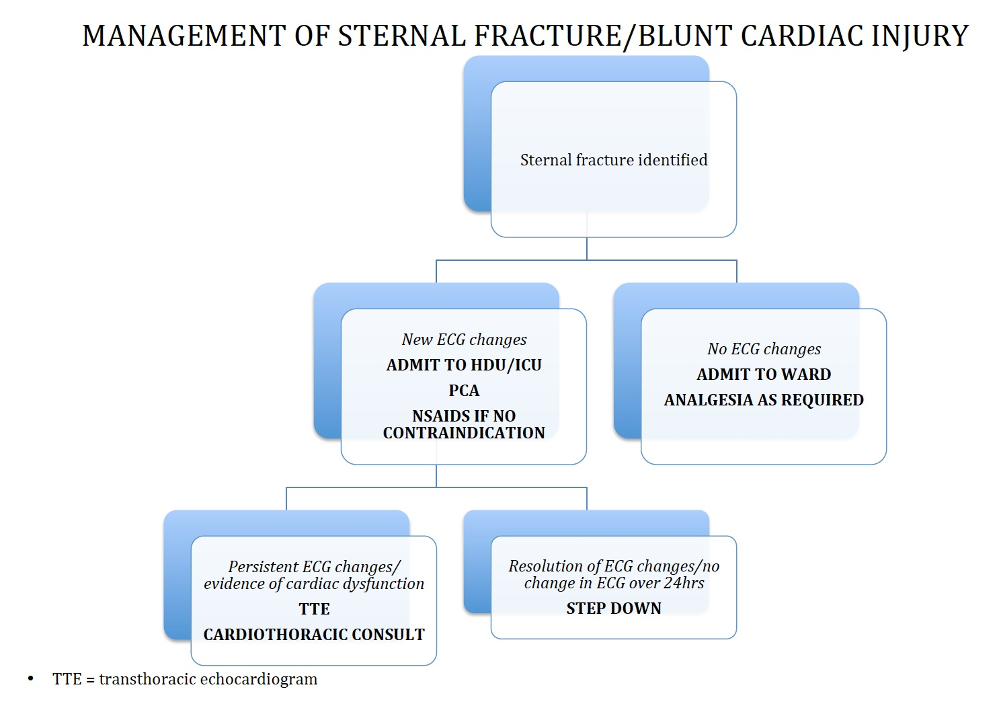
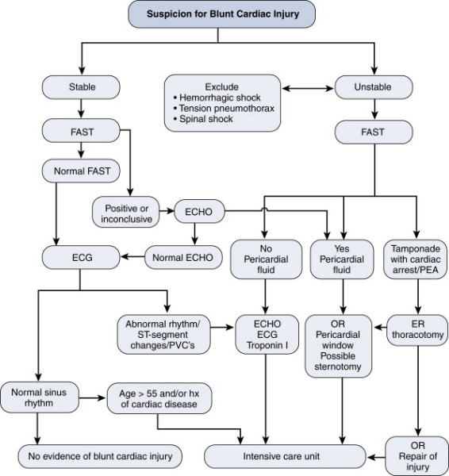

Blunt Cardiac Injury
DEFINITION
Damage to part of the heart as a result of direct force
during trauma.
Algorithm:

D E A B M I M
EPIDEMIOLOGY
-
D E A B M I M
AETIOLOGY
Trauma
D E A B M I M
BIOLOGICAL BEHAVIOUR
Can result in myocardial muscle contusion, cardiac chamber rupture,
valvular disruption.
D E A B M I M
MANIFESTATIONS
Chest wall injury.
Chamber rupture leads to tamponade.
- occurs due to forceful return of large caval supply to heart
during forceful pressure
Chest pain, often attributed to the chest wall.
Thorough physical exam is the most important step
Hypotension
- need to differentiate source of shock state among various
possibilities
Elevated CVP may indicate right ventricular dysfunction.
D E A B M I M
INVESTIGATIONS
No single test'
Fast may show tamponade
Wall motion abnormalities on echo.
Conduction abnormalities on ECG
- prem contractions, sinus tachy, AF, BBB, ST seg changes.
- may also indicated frank myocardial infarction.
Elevated Trop
- possibly, but adds little of value and not used in evaluation and
management.

EAST Guidelines for Workup:
1. ECG on all chest injured patients
2. If admission EGG abnormal, continuous ECG monitoring for 48h;
else risk insignificant.
3. If unstable, Echo.
4. Sternal # is not predictive and in itself does not indicate need
for monitoring
5. Enzymes are unhelpful in predicting significant injury such as
would have complications.
D E A B M I M
MANAGEMENT
See algorithm
Risk of sudden dysrhythmias - monitor for 24hrs (risk much reduced
after this time).
Treat complications as required
Witnessed or impending cardiac arrest may need thoracotomy; see
notes.
- pericardiotomy exposes heart; identify bleeding;
- clamp descending aorta if required
- haemodynamically unstable with palpable pulse = do it in operating
room
For open cardiac wounds can temporarily close with an Allis clamp or
Satinsky.
D E A B M I M
REFERENCES
ATLS